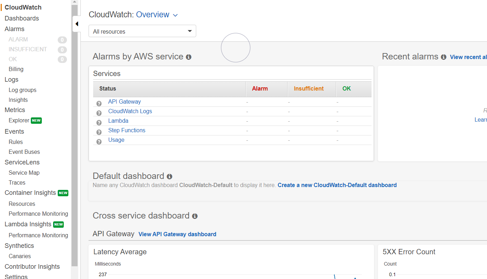
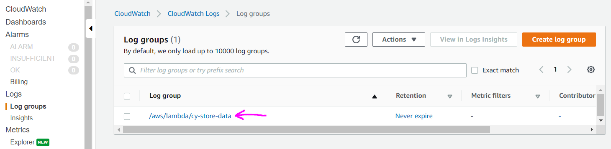
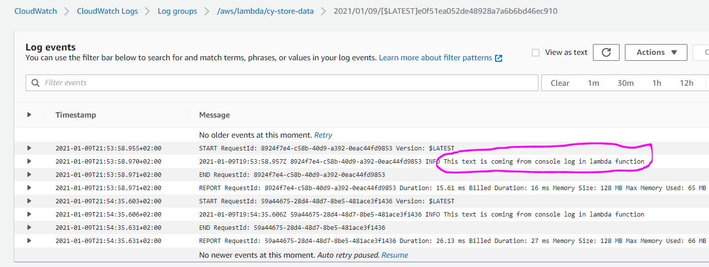

Here is the initial screen of the service
Here we will check an example with console.log coming from a lambda function. Click Log groups under Logs. Click the lambda function execution details. Note that for this example we have lambda function console.logging some text and we have executed it already to have some logs which we can check
You will see stream of logs, if you have multiple select the latest. On the below screenshot you can see after the INFO, the text our lambda function is console.logging everytime the function is executed
